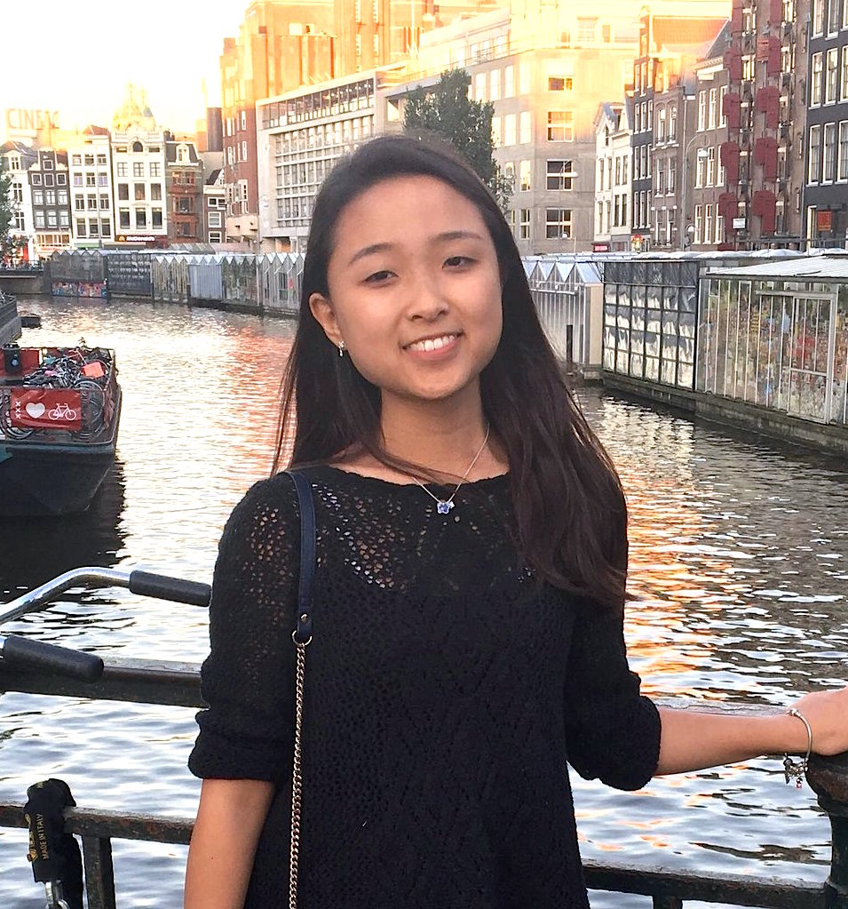

Pilar began playing the violin at age 6. She attended a nearby music school, the Noel Pointer Foundation to begin her instruction. She progressed very quickly. Garnering recognition for her prodigious advancement, she was invited to perform in numerous venues in and around NYC including; two live television broadcasts (FOX 5 News and WPIX 11 respectively), the Brooklyn Children’s Museum, DiMenna Center for Classical Music and BAM Fisher to name a few. Most notably, she was asked to perform a closing solo at the New York Society for Ethical Culture commemorating the honorable former Mayor of NYC, David N. Dinkins. In addition, early in her studies, Pilar was recognized by the Royal Conservatory Achievement Program, receiving First Class Honors with Distinction- allowing her to perform at Carnegie Hall’s Zankel Hall. It was at this time that Pilar’s family sought out arguably, the leading music school in NYC to further their daughter’s musical development. They set their sights on Amadeus Music School in Queens, NY. The long list of young musicians who were accepted to some of the most prestigious pre-college conservatories in the country hailed largely from Amadeus. It is here that Pilar first started working with the incredible Dr. Linya Su and later, the renowned I-Hao Lee. Within a few months of working with Mr. Lee, Pilar competed in the New York Music Competition. She won First Prize and was invited to perform at the Winners Concert at Carnegie Hall’s Weill Recital Hall. Immediately following this performance, Pilar auditioned for Juilliard Pre-College. Under the auspices of her esteemed teacher, she was accepted with a generous financial aid package at age 9. At the end of her first year at Juilliard, Pilar was given the honor of playing in the Rising Stars Concert, with other Juilliard pre-college violinists. It was held at Flushing Town Hall and hosted by Amadeus Music School. Pilar will finish her second year at Juilliard this May and will be attending Green Mountain Chamber Music Festival in Vermont this summer.

Faith Pak, age 19
I began playing the violin at the age of five, and I came to study with I-Hao Lee when i was seven years old. Amadeus Music School was a big part of my childhood--I remember practicing my etudes and songs, and having plenty of snack parties with friends. At the age of 12 I found my real passion in the viola, which I liked better than violin for its mellower, more calming tone. With Mr. Lee's devotion and guidance, I eventually made it into Juilliard Pre-College and the National Youth Orchestra of the USA, where I got to play as principal violist for two summer tours to China and Europe! I'm currently a student at Harvard University, where I study comparative literature and play principal viola in the Harvard-Radcliffe Orchestra. I definitely couldn't made it so far without the unique learning environment of Amadeus, and the lessons from Mr. Lee on how to play in tune and dream big. ^_^